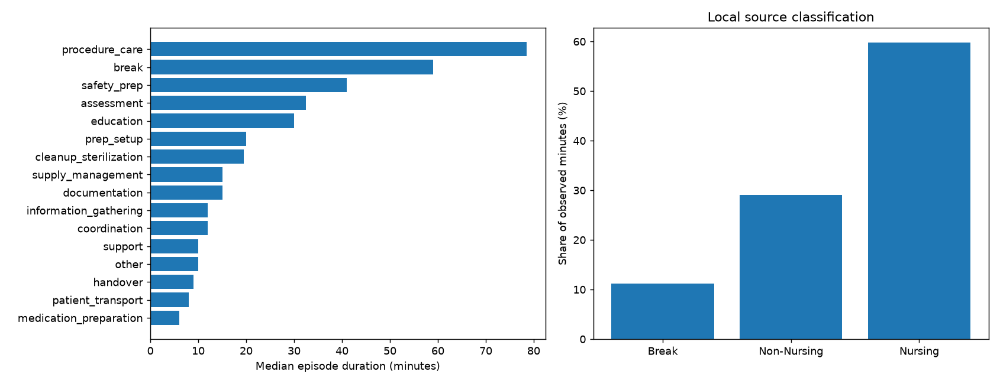
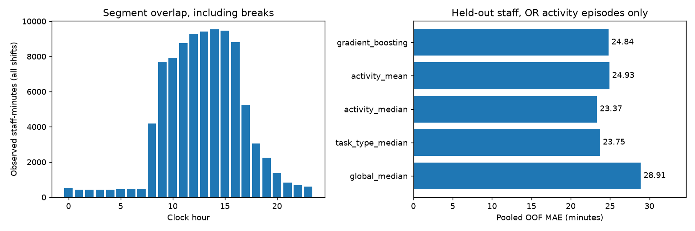
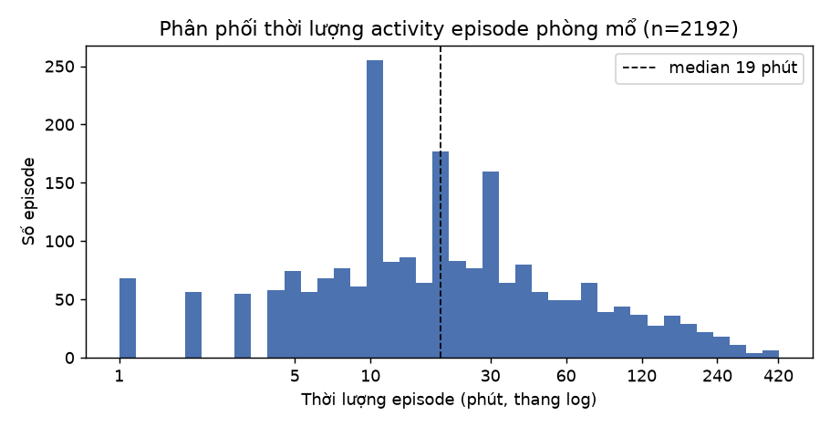
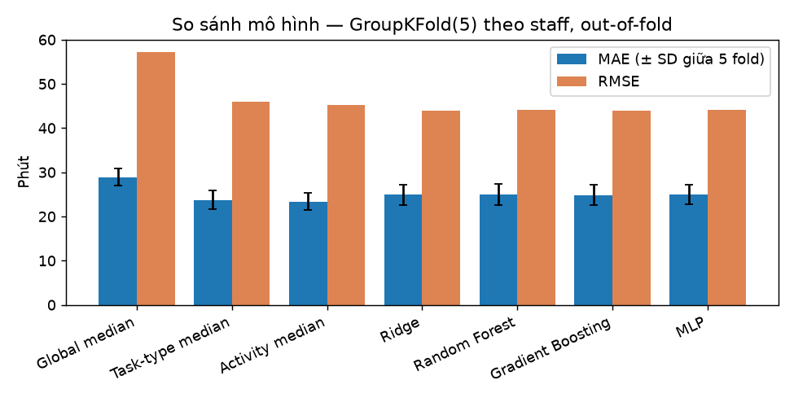
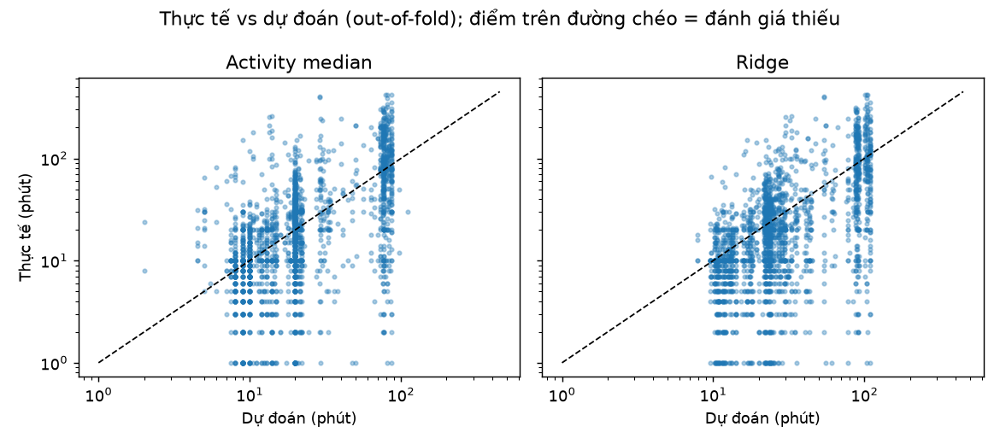
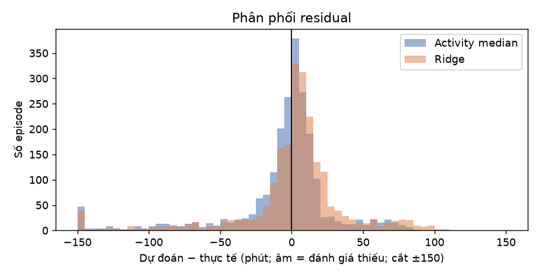
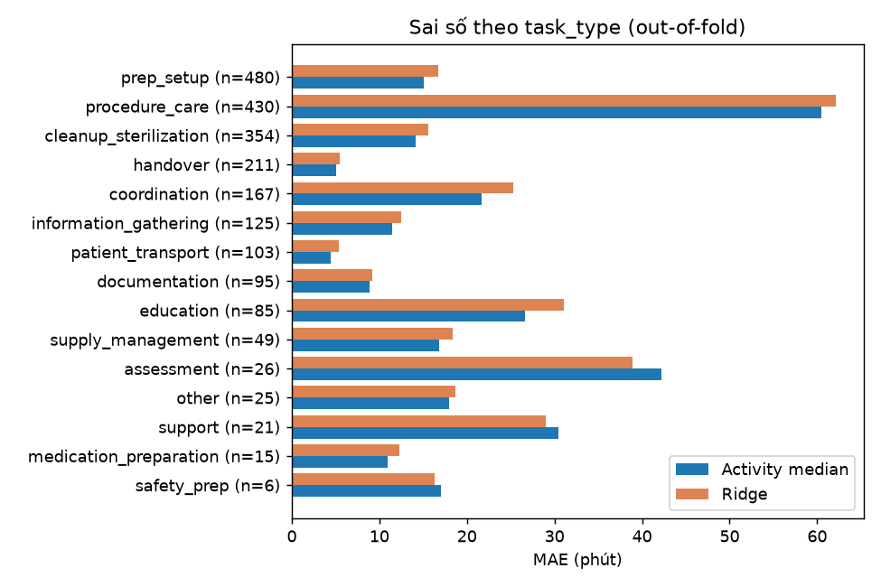
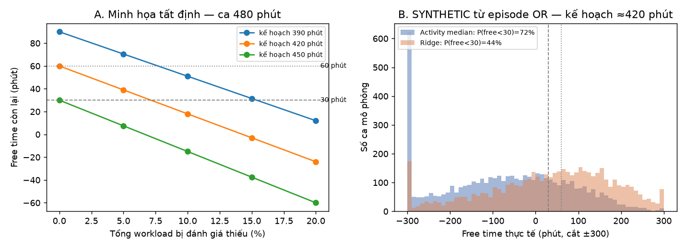
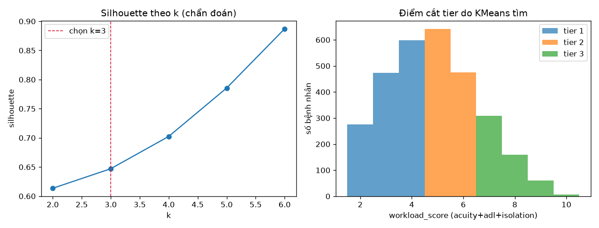

VinAI · AI20K · Track B — Healthcare
Trợ lý lập phân công đầu ca cho điều dưỡng — AI đề xuất bản nháp, trưởng ca duyệt.
Vấn đề
Trưởng ca phải cân nhắc kỹ năng, tải và giờ nghỉ của cả kíp trong vài phút — chủ yếu dựa vào kinh nghiệm.
Người gánh quá nhiều, người lại rảnh — ảnh hưởng chất lượng chăm sóc.
Việc cần kỹ năng chuyên biệt rơi vào người chưa đủ năng lực là rủi ro trực tiếp cho người bệnh.
Muốn ai cũng có giờ nghỉ mà vẫn đủ người trực là bài toán không dễ nhẩm.
Không có căn cứ rõ ràng để trưởng ca kiểm lại nhanh một phương án.
Nguyên tắc thiết kế
Trưởng ca duyệt mới áp dụng; điều dưỡng không tự thay đổi kế hoạch.
Không đụng tới quyết định lâm sàng; thiếu dữ liệu thì hỏi, tuyệt đối không tự điền.
Bài toán xếp lịch là tối ưu tổ hợp — không nhồi tất cả vào một mạng nơ-ron.
Mọi con số đều có nguồn; bộ đề đánh giá được khoá; không chỉnh kết quả cho đẹp.
Kiến trúc
Trưởng ca mô tả kíp trực và danh sách việc.
Hiểu yêu cầu, từ chối hoặc hỏi lại, rồi gọi công cụ và giải thích.
L3 điền thời lượng việc; L2 (CP-SAT) xếp lịch tối ưu và khả thi.
Validator soát 0 vi phạm kỹ năng/coverage, rồi chờ trưởng ca duyệt.
Giải pháp · Engine xếp lịch (L2)
Ưu tiên bậc thang: an toàn trước, rồi mới tới cân bằng và gọn lịch.
Giải pháp · Gom việc
Mỗi việc có một “nhóm tương thích” = (phòng · loại việc · thiết bị). Engine phạt mỗi lần đổi nhóm và mỗi phút chuyển phòng, nên việc cùng chỗ và cùng loại được xếp liền nhau.
Vẫn thỏa mọi ràng buộc an toàn, nhưng ít đi lại, ít chuyển ngữ cảnh và tải đều hơn — đây chính là nguồn gốc của CV 0.009 và overhead thấp.
Trí tuệ của hệ thống
Hiểu tiếng Việt tự nhiên, từ chối việc lâm sàng, hỏi khi thiếu và giải thích phương án. Chạy được với OpenAI, Claude, Gemini hay Ollama.
Học trên dữ liệu phòng mổ thật (Zenodo). Thực tế chạy nội trú dùng bảng tra có nguồn (Simmons) và hỏi lại khi thiếu.
Gom cụm không giám sát theo acuity + ADL + cách ly; điểm cắt bậc do dữ liệu quyết. Ship kèm quy tắc dự phòng.
Dữ liệu · Nguồn & kiểm chứng
| Nguồn | Vai trò | Giấy phép · kiểm chứng |
|---|---|---|
| Zenodo 20754938 — time-motion phòng mổ | Huấn luyện & EDA L3 | CC-BY-4.0 · MD5 78e04e… khớp, pipeline tái lập được |
| Simmons 2025, Table 3 (jgs.19507) | Bảng tra thời lượng nội trú | 9 dòng đối chiếu nguyên văn bài báo |
| McGill workload tool (Borealis) | Phân bậc bệnh nhân L4 | CC0 · MD5 52af91… · 113 item |
| MatchRN v1.0.0 (Zenodo 15248072) | Bằng chứng áp lực ca | MD5 của CSV / codebook / readme đều khớp |
| MIMIC-IV / eICU demo (PhysioNet) | Bối cảnh lâm sàng | ODbL — chỉ giữ số thống kê, không chép dữ liệu thô |
Cách huấn luyện & kiểm thử
2.192 lượt hoạt động của 37 điều dưỡng phòng mổ (Zenodo). Giữ nguyên toàn bộ outlier, không xóa để giảm sai số.
Chia fold theo nhân viên (GroupKFold) và tách holdout theo thời gian — không ai vừa ở train vừa ở test.
Ba baseline median → Ridge, Random Forest, Gradient Boosting và một mạng nơ-ron (MLP). Seed cố định, cấu hình cố định.
Model phòng mổ chỉ để nghiên cứu (metadata production: false). Nội trú dùng bảng tra có nguồn.

Dữ liệu · EDA
Không thể gán một con số chung cho mọi việc → cần ước lượng theo loại việc, và phải lường trước phương sai lớn.

Dữ liệu · EDA
Lịch phải bám cao điểm để bảo vệ giờ nghỉ; và đánh giá phải tránh rò rỉ giữa train và test.
Dữ liệu · Kết quả EDA
segment thô → episode làm việc (bỏ 1 dòng trùng, gộp hoạt động liên tục)
nhân viên · ca-người (staff-shift) — 46 nhãn việc, 13 nhóm
khung cao điểm — 331 lượt bắt đầu việc trong tuần
| Nhóm việc | Số lượt | Trung vị |
|---|---|---|
| procedure_care | 430 | 78,5′ |
| break (giờ nghỉ) | 188 | 59′ |
| prep_setup | 480 | 20′ |
| cleanup | 354 | 19,5′ |
| documentation | 95 | 15′ |
| handover (bàn giao) | 211 | 9′ |
L3 · Huấn luyện


Dữ liệu chỉ có một feature phân loại nên mọi model hội tụ về trung bình theo hoạt động — kể cả MLP. Bài học trung thực: baseline đơn giản là đủ, và chúng tôi ghi lại đúng như vậy.
L3 · Phân tích sai số


Median thiếu ~7,7 phút/lượt, cộng dồn cả ca thì free time bị tính dư. Ridge kéo bias về ~0 — quan trọng cho việc tính đúng giờ nghỉ.

L3 · Phân tích sai số
Phần khó không phải việc thường quy mà là việc dài phụ thuộc bối cảnh — cần thêm dữ liệu để thu hẹp.

L3 · Ý nghĩa thiết kế
Chọn mô hình phải nhìn bias ở mức tổng cả ca, không chỉ MAE từng việc — để bảo vệ giờ nghỉ.

L4 · Phân bậc bệnh nhân
Dùng clustering trung thực thay vì bịa một mô hình supervised khi không có nhãn.
Kết quả
Demo trực tiếp
Điều dưỡng chỉ thấy ca của mình; trưởng ca thấy cả kíp.
Lời giải thích kế hoạch bằng tiếng Việt, từ model thật.
Mọi thay đổi là bản nháp chờ duyệt — không tự áp dụng.
AI đề xuất, trưởng ca quyết định — điều dưỡng không tự áp dụng.
→ Chuyển sang trình duyệt: design/wireframes/login.html